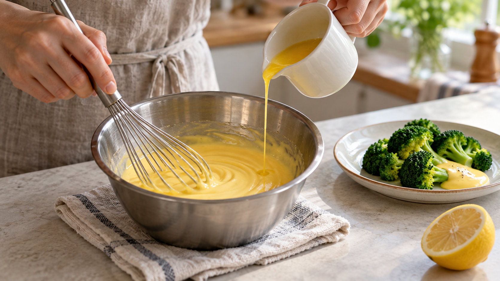

オランデーズソースが急に分離する｜卵黄の温度と水分不足
蒸したブロッコリーに添える温かいオランデーズソースを作っている最中、なめらかだったソースから急に油が染み出し、モロモロと崩れてしまうことがあります。卵黄を熱で固めすぎたり、油を散らばらせるための水分が不足したりすることが原因になります。
家庭では、穏やかに温めてバターを少しずつ加え、濃くなりすぎたら水分を補うことが大切です。 油が浮いたという見た目だけで、原因を一つに決めつけないようにしましょう。
水と油がつながる仕組み
オランデーズソースは、水やレモン汁の水分の中に、溶かしたバターの細かな油の粒が散らばっているソースです。このように水と油を細かな粒の状態で一緒に保つことを「乳化」と呼びます。
大学研究者による科学解説によると、卵黄に含まれる成分が油の小さな粒を取り囲み、油同士が再びくっつくのを防ぐ支えになります。この状態には水分も必要で、不足すると油が外へ漏れる一因になります。油を少しずつ加えながら混ぜることは、小さな油の粒を作るための工夫です。
卵黄に適度な熱を加えるとソースにとろみがつきますが、加熱しすぎるとたんぱく質が固まって粒状になり、なめらかさが失われます。反対に冷えすぎてバターが固まることも、ソースが崩れる理由になります。
研究で確かめられたこと
Rognsåらの研究では、材料の量をそろえていても、混ぜ方、材料を加える順序、材料の温度や状態が異なると、食感や口あたりの評価に大きな違いが現れました。
ここから分かるのは、分量だけでなく作る手順も仕上がりに関わるということです。この研究は手法全体を比べているため、一つの水量や温度を家庭での最適値と決めることはできません。家庭では、温度計の数字とボウルの中の変化を一緒に見て加減するのがよさそうです。
油だけが浮き始めたら、まず熱源から外し、少量の水を足して混ぜる方法を試せます。ただし、必ず戻るとは限りません。すでに卵黄が固まって明らかな粒になっている場合は、水を足すだけで元のなめらかさには戻せません。
ブロッコリーにかけるソースを作る
次は家庭で作るための2人分の提案です。ブロッコリー150〜200g、殺菌済み卵黄20g、無塩バター60g、水10mL、レモン汁10mL、塩少々、調整用のぬるま湯を用意します。
卵黄は、加熱せず食べられると表示された殺菌済み製品を使い、保存・取り扱いは表示に従ってください。米国食品医薬品局の卵の安全指針も、十分に加熱しない卵料理には殺菌済みの卵製品を案内しています。この手順では普通の生卵黄や、殺菌済みでも加熱必須の製品に置き換えないでください。
ソースを作る作業は約5〜10分が目安です。
- ブロッコリーとバターを用意する。 小房に分けたブロッコリーを、竹串がすっと通るまで蒸します。バターは湯せんなどで溶かし、40〜50℃程度にしておきます。
- 卵黄液を穏やかに温める。 卵黄、水、レモン汁を耐熱ボウルで混ぜます。鍋の湯をごく弱火にし、ボウルを安定してのせます。底は湯に触れさせず、泡立て器で全体を混ぜ続けます。60〜63℃程度を目安に、軽くとろみがついたら鍋から外します。これは食感を作る目安で、家庭で卵を殺菌する手順ではありません。
- バターを少しずつ加える。 ボウルを濡れ布巾の上で固定します。混ぜながら最初は数滴ずつ、なじんだら細い流れでバターを加えます。濃くなりすぎたらぬるま湯を小さじ1ずつ加え、塩で味を調えます。
- すぐに盛り付ける。 温かいブロッコリーにソースをかけ、完成したらすぐに食べます。温かいまま長時間保温したり、作り置きしたりしないでください。
日常の料理でも水分を確かめる
ソースやタレが煮詰まって重くなったとき、さらに火を入れると水分はもっと減ります。今回の学びは、まず「水分が減っていないか」「熱を加えすぎていないか」と確かめる判断につながります。
別のソースでも同じ方法で直るとは限りませんが、火から外す、水分を補うという選択肢を思い出すきっかけにはなります。とろみを付けたいのか、すでに濃くなりすぎているのかを見てから、次の操作を決めましょう。
まとめ
オランデーズソースのなめらかさは、卵黄を粒状に固めすぎない加熱、水分、バターを少しずつ混ぜる手順によって支えられます。分離したら慌てて加熱を続けず、まず火から外して、油が浮いたのか卵が固まったのかを見てみてください。
参考資料
- Rognsåほか（2014）「Preparation methods influence gastronomical outcome of hollandaise sauce」International Journal of Gastronomy and Food Science
- Hopia・Sillanpää・Tuomisto（2013）「Hollandaise sauce and the chemistry behind old and new preparation techniques」LUMAT
- 米国食品医薬品局「What You Need to Know About Egg Safety」